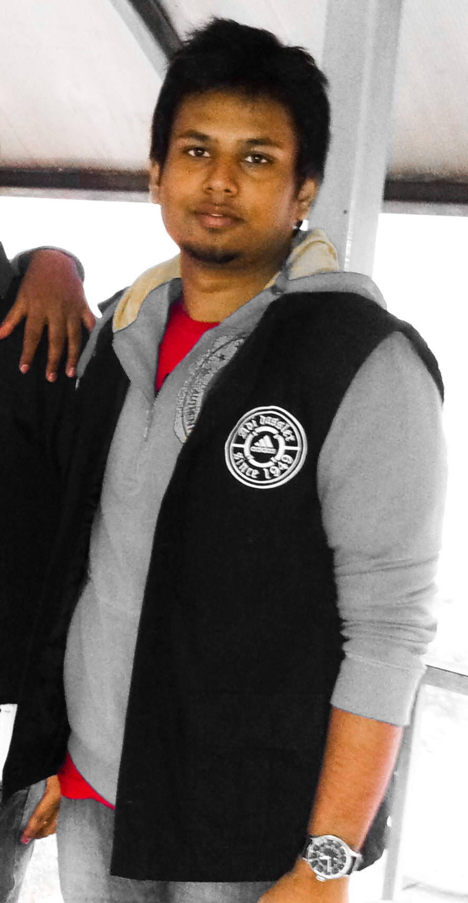
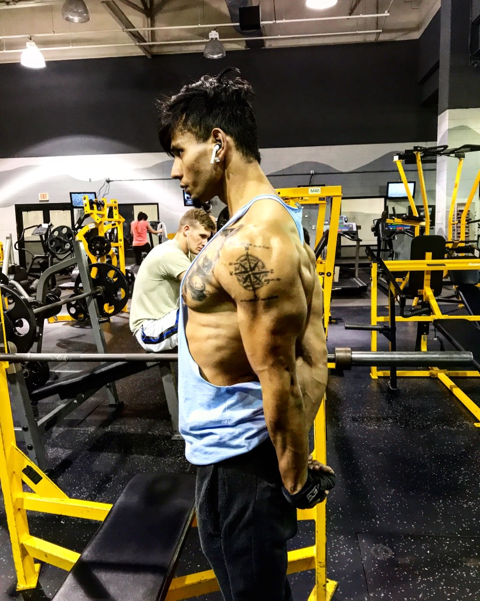
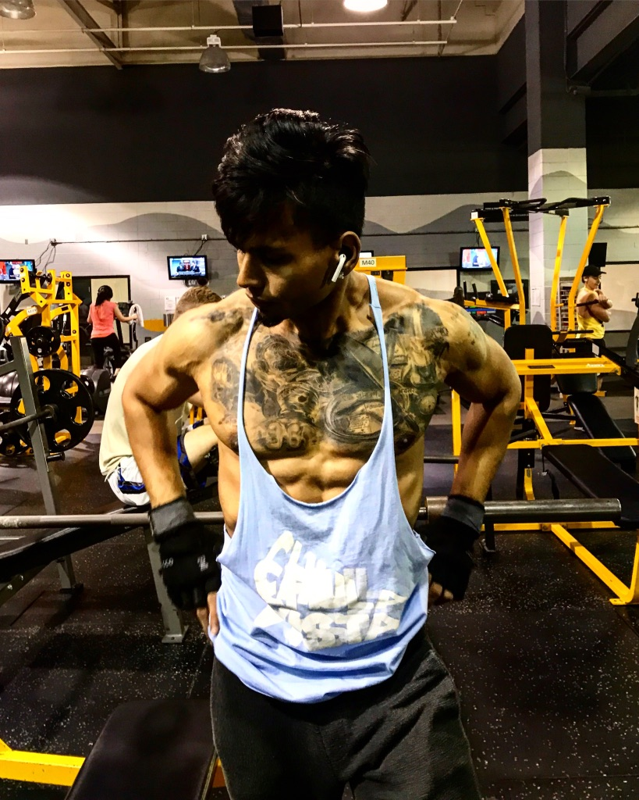

My Passions
Fitness is one of my biggest passions along with technology, coding and self-improvement. Let me tell you a little
story of a life-changing transformation that I experienced, which made me fall in mad-love with fitness
and training. Due to an unfortunate event I suffered a lower-back injury in the year 2011. Two of my
lower discs at the L4-L5 level suffered massive trauma that caused major lower-body immobility. It became
impossible for me to walk, sit or bend down without immense lower back pain. These were the exact words
of my doctor when they looked at my MRI, "Your spine looks like it belongs to a person who is atleast 50
years old." I was put on complete bed rest for a few months. After consulting with several Neuro-Surgeons I went in for a surgery dead scared thinking if I would ever be able to walk without pain again. I still remember feeling embarassed when I was taken to New Delhi for my surgery and had to go around the airport in a wheel chair.

I couldn't recognize the person I had become after the injury
The whole incident took away 2 years of my life that
were spent in depression, pain, surgery, physiotherapy and getting back on my feet.
I decided that I had to turn my life around and never let something like this wither my life again.
I dedicated my life to research and training to get my strength back. In a few years what had started with
a simple goal turned into a never ending obsession of self-improvement.
I fell in love with challenging myself day in and day out to learn and apply new techniques and
training routines not just in fitness but life in general. I have come a long way since my
injury and am proud of what I have achieved so far.


A better version of myself
Future Endevaours and Goals
I believe my injury was a blessing in disguise that helped me create a better and more passionate
life for myself. I have learned a lot along the way and I want to use my story as an example and
inspire others who might be in similar situations as I was a few years ago. I want
to communicate to people the power of self-belief and a desire for better life regardless of your past.
Online Educational Platform for Fitness, Nutrition and Injury-Rehab
I have set my eyes on new goals of transforming the fitness industry with my curiosity, ideas, and technical skills. I want to create an online educational platform that houses different
courses on training routines such as Weight Training, Calisthenics, Martial Arts, etc. There
will also be courses on Nutrition, Supplementation and Injury-Rehabilitation. I want to network with
an elite group of indviduals with expertise in different areas of fitness and athletics
and share their knowledge with the world
in the form of video tutorials packaged into courses.
Cooking and future vision of establsihing a Nutrition Brand
I cook with all my heart. I believe that nutrition is a subject of major focus when it comes to fitness.
I enjoy researching nutrition and diet routines to maintain a healthy lifestyle without having
to give up on the desserts and mouth-watering foods we all love to indulge in.
I love transforming comfort foods into protein-packed healthy meals. I want to establish a nutrition
brand that will research and create products that will be both nutritious and delicious. This brand will
be targeted towards improving peoples' lifestyles without making nutrition a frustrating task.